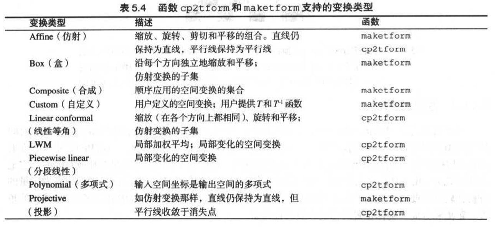

图像复原
理论知识
图像退化/复原过程
什么是退化：图像在获取(成像传感器)和传输(信道干扰)过程中, 由于成像系统、记录设备、传输介质和处理方法得不完 善，导致图像质量下降，称为图像退化.
退化的原因：
- 成像系统的散焦
- 成像设备与物体的相对运动
- 成像器材的固有缺陷
- 外部干扰
图像退化模型：
图像复原：
图像复原是试图利用退化过程的先验知识（退化模型化）使已退化的图像恢复本来面目的过程。
图像复原的目的是消除或减轻在图像获取以及传输过程中造成的图像品质下降，补偿退化过程造成的失真
图像复原可以看成图像退化的逆过程。
在图像退化确知的情况下，图像退化的逆过程是有可能进行的。但实际情况经常是退化过程并不知晓，这种复原称为盲目复原。
由于图像模糊的同时，噪声和干扰也会同时存在，这也为复原带来了困难和不确定性
图像增强 VS 图像复原
图像复原技术的分类：
- 在给定退化模型下，分为无约束和有约束
- 根据是否需要外界干预，分为自动和交互
- 根据处理所在的域，分为频域和空间域
噪声模型
噪声的来源：主要来源于图像的获取（数字化过程）和传输过程：
- 数字图像的噪声主要来源于图像的获取和传输过程；
- 图像获取的数字化过程，如图像传感器的质量和环境条件；
- 图像传输过程中传输信道的噪声干扰，如通过无线网络传输的图像会受到光或其它大气因素的干扰；
噪声的空间和频率特性：
- 频率特性指噪声在傅立叶域的频率内容。
- 空间特性：除周期噪声以外，假设噪声独立于空间坐标，并且它与图像本身无关联。
- 空间噪声利用退化模型中噪声分量的灰度值统计特性来表示。
- 可以被认为是由概率密度函数表示的随机变量。
图像处理中常见噪声概率分布函数：高斯噪声，瑞丽噪声，伽马（爱尔兰）噪声，指数分布噪声，均匀分布噪声，脉冲（椒盐）噪声；
在实际应用中，往往假设噪声是白噪声，即它的频谱密度为常数，且与图像不相关。
不同的复原技术需要不同的有关噪声的先验信息，如维纳滤波器需要知道噪声的谱密度，而约束去卷积法只需要知道噪声的协方差.
高斯噪声
其中$z$表示灰度值，$\mu$表示$z$的平均值或期望，$\sigma$表示$z$的标准差，标准差的平方$\sigma^2$称为$z$的方差。
瑞丽噪声
概率密度的均值为$\mu = a+\sqrt{\pi b/4}$，方差为$\sigma^2 = \frac{b(4-\pi)}{4}$ 。
伽马（爱尔兰）噪声
其中，$a>0$，$b$为正整数。概率密度的均值$\mu = \frac{b}{a}$，方差是$\sigma^2=\frac{b}{a^2}$ 。
指数分布噪声
其中，$a>0$ 。概率密度的均值$\mu = \frac{1}{a}$，方差是$\sigma^2=\frac{1}{a^2}$ 。
均匀分布噪声
概率密度的均值$\mu = \frac{a+b}{2}$，方差是$\sigma^2=\frac{(b-a)^2}{12}$ 。
椒盐噪声
若是$b>a$,则灰度值$b$将显示为一个亮点，$a$的值将显示为一个暗点
若$P_a$或$P_b$为零，则脉冲噪声成为单极脉冲。
若$P_a$或$P_b$均不可能为零,尤其是近似相等时,脉冲噪声值类似于随机分布在图像上的胡椒和盐粉细粒.
各种噪声效果图
几种噪声模型的运用
- 高斯噪声用于描述源于电子电路噪声和由低照明度或高温带来的传感器噪声
- 瑞利噪声用于在图像范围内特征化噪声现象
- 伽马分布和指数分布用于描述激光成像噪声
- 均匀密度分布作为模拟随机数产生器的基础
- 脉冲噪声用于描述成像中的短暂停留(如错误的开关操作)
周期噪声
本文章讨论的唯一空间依赖型噪声，周期噪声可以通过频率域滤波显著减少。
周期噪声的参数估计是通过检测图像的傅里叶变换来进行估计的。
噪声的参数估计
统计一小块图像的灰度直方图，判断噪声的分布函数类型；
计算样本的噪声的均值，
方差，
其中$z_i$值是像素的灰度值，$p(z_i)$表示相应的归一化直方图。
只存在噪声的空间滤波复原
当且仅当加性噪声存在时，可以选择空间滤波方法。
由于均值滤波器和统计排序滤波器的原理公式已在以前的文章总结，这里不多赘述，只描述一下有特定良好用途的；
均值滤波器
谐波均值滤波器，对“盐”的噪声效果好，但不适合“胡椒”；
逆谐波均值滤波器，Q为滤波器的阶数，当Q值为正数时 滤波器用于消除”胡椒”噪声；当Q值为负数时，滤波器用于消除”盐”噪声；当Q=0时，逆谐波均值滤波器退化为算术均值滤波器；当Q=-1时，逆谐波均值滤波器退化为谐波均值滤波器。
算术均值和几何均值都能衰减噪声。 但比较而言,几何均值滤波器的结果图像相对较清晰.
算术和几何适合处理高斯或均匀等随机噪声。逆谐波更适于处理脉冲噪声
使用谐波滤波器需要知道噪声是暗噪声还是热噪声，已选择合适的Q值的正负号类型。
统计排序滤波器
中值滤波器：在相同尺寸下，比起均值滤波器引起的模糊少；对单极或双极脉冲噪声非常有效。
最大值滤波器：用于发现图像中的最亮点；可以有效过滤“胡椒”噪声（因为“胡椒”噪声是非常低的值）。
最小值滤波器：用于发现图像中的最暗点；可以有效过滤“盐”噪声（因为“盐”噪声是非常高的值）。
中点滤波器：结合了顺序统计和求平均 ；对于高斯和均匀随机分布这类噪声有最好的效果。
- 可多次应用中值滤波逐渐消除噪声，但多次应用中值滤波器,，会使图像模糊
- 最大值滤波器可以去除”胡椒”噪声，但会从黑色物体边缘移走一些黑色像素。(亮物体 变大，暗物体变小)
- 最小值滤波器可以去除”盐” 噪声，但会从亮色物体边缘移走一些白色像素。(亮物体变小， 暗物体变大)
- 由于脉冲噪声的存在，算术均值滤波器和几何均值滤波器没有起到良好作用。
- 中值滤波器和阿尔法滤波器效果更好,阿尔法最好.
自适应滤波器
之前介绍的滤波器都没有考虑过图像中的一点对于其他点的特征变化。
滤波器的特征变化是以「$m\times n$的矩形窗口$S_{xy}$定义的滤波器区域内」图像的统计特性为基础的。
自适应滤波器的性能要更优，复杂度更高。（这里的背景是针对的图像还是只有噪声干扰的图像）
这里介绍两种自适应滤波器：
- 自适应局部降噪滤波器
- 自适应中值滤波器
自适应局部降噪滤波器
随机变量最简单的统计度量是均值和方差。在图像领域，对于滤波器来说，均值给出了在其计算均值的区域中平均灰度的度量，而方差则给出了该区域的对比度的度量。
滤波器作用于局部区域$S_{xy}$。滤波器在该区域中心$(x,y)$任意一点上的响应基于一下4个量：
- $g(x,y)$，带噪图像在该点$(x,y)$上的是
- $\sigma_{\eta}^2$，污染$f(x,y)$以形成$g(x,y)$的噪声的方差
- $m_L$，$S_{xy}$中像素的局部均值
- $\sigma_{L}^2$，$S_{xy}$中像素的局部方差
我们希望滤波器有性能如下：
- 如果$\sigma_{\eta}^2=0$，则滤波器简单的返回$g(x,y)$就行了，因为噪声的方差为零，意味着是零噪声情况下，$f(x,y)=g(x,y)$。
- 如果局部方差与$\sigma_{\eta}^2$是高相关的, 那么滤波器要返回一个$g(x, y)$的近似值。典型的，高局部方差与边缘有关，并且应该保护这些边缘
- 如果两个方差相等,希望滤波器返回区域$S_{xy}$上像素的算数平均。这种情况发生在局部区域与整个图像有相同特性的条件下，并且并且局部噪声将通过简单地求平均来降低。
基于这些要求得到的自适应滤波器表达式可以写成：
在四个量中，唯一需要估计的量就是全部噪声的方差$\sigma_{\mu}^2$，其他参数可以有模版$S_{xy}$的包围的像素数据得出。一般假设$\sigma_{\eta}^2\leqslant\sigma_{L}^2$。模型中的噪声是加性的和位置独立的。
因为在现实中，很可能无法满足$\sigma_{\eta}^2\leqslant\sigma_{L}^2$这个一般假设，所以应设置一个条件，当$\sigma_{\eta}^2<\sigma_{L}^2$时，设置$\frac{\sigma_{\mu}^2}{\sigma_L^2}$为1。
自适应中值滤波器
自适应中值滤波器与传统中值滤波器的区别：
传统中值滤波器只能处理空间密度不大的冲激噪声（$P_a,P_b<0.2$），而自适应中值滤波器可以处理具有更大概率的冲激噪声；可以在平滑非冲激噪声时保存细节，而传统中值滤波器无法做到。
自适应中值滤波的主要目的：
- 除去“椒盐”噪声(冲激噪声)
- 平滑其它非冲激噪声
- 减少物体边界细化或粗化等失真
自适应中值滤波器也工作于矩形窗口$S_{xy}$中，而且，自适应中值滤波器有一个特性，它会根据某些条件改变$S_{xy}$的尺寸。
规定如下符号：
- $z_{min}=S_{xy}$中的最小灰度值
- $z_{max}=S_{xy}$中的最大灰度值
- $z_{med}=S_{xy}$中的灰度值中值
- $z_{xy}=$坐标$(x,y)$处的灰度值
- $S_{max}=S_{xy}$允许的最大尺寸
自适应中值滤波器算法工作在两个层次, 定义为A层和B层 :
A层：(决定中值滤波的输出$z_{med}$是否是一个脉冲)
- $A_1=z_{med}-z_{min}$
- $A_2=z_{med}-z_{max}$
- 如果$A_1>0$且$A_2<0$,则转到$B$层 (不是一个脉冲)
- 否则增大窗口尺寸，（找到一个脉冲，就增大窗口尺寸，直到找到非脉冲）
- 如果窗口尺寸$<S_{max}$ ,重复A层
- 否则输出$z_{xy}$
B层：（检测中心点$z_{xy}$本身是不是一个脉冲）
- $B_1=z_{xy}-z_{min}$
- $B_2=z_{xy}-z_{max}$
- 若$B_1>0$且$B_2<0$,则输出$z_{xy}$ （不是脉冲，直接输出）
- 否则输出$z_{med}$ （此时$z_{xy}=z_{min}$或者$z_{xy}=z_{max}$）
频域滤波器消减周期噪声
带阻滤波器，带通滤波器和陷波滤波器以前文章有详细介绍；
问题：为什么水平线的周期噪声要用如c图的陷波带通滤波器？
最佳陷波滤波器
当存在几种干扰时,采用一般滤波器可能在滤波过程中可能消除太多图像信息。干扰成分通常不是单频脉冲。相反，他们通常有携带干扰模式信息的宽边缘。最佳的意思是，在一定意义上，它最小化的复原的估计值$\hat{f}(x,y)$的局部方差。
实现的步骤由两个部分组成：
- 屏蔽干扰的主要成分；
- 从被干扰的图像中减去一个可变的模式加权部分。
详细原理可见教材P214～P215
线性，位置不变的的退化模型
退化模型：
$H$是一个线性系统：
$H$是一个位置不变系统（空间不变系统）：
许多退化类型可以近似表示为线性的位置不变过程；
由于退化模型为卷积的结果， 因此术语“图像去卷积”常用于表示线性图像复原；
由于图像复原需要滤波器，而用于复原处理的滤波器称为“去卷积滤波器”。
估计退化函数
退化函数通常未知，因此在复原之前需要估计退化函数。使用以某种方式估计的退化函数来复原一幅图像的过程，有时候称为盲去卷积。
估计方法：1.观察法；2.试验法；3.数学建模法；
观察法
若我们没有任何关于退化函数的信息，我们只能从图像本身来收集信息。
在图像中选取一块有很强信号内容的（高对比度的）矩形区域$g_s(x,y)$，然后用处理这个子图像使其尽可能的不模糊，得到$\hat{f}(x,y)$。则可以得到：
根据这个函数特性，我们可以基于位置不变的假设还原完整的退化函数$H(u,v)$。
试验法
用与获取退化图像的设备相同或相似的装置来做矫正。也就是得到冲激响应即可
数学建模法
利用经验模型或者原理模型来解释一个退化函数。
经典案例：运动图像模糊
上述事件可以抽象成，摄像机与物体的相对线性运动：摄像机与被摄物体在快门打开期间T内的相对运动，会引起物体在图像中的平滑，即图像数据为快门打开期间内瞬时曝光值的积分。它产生的H函数如下：
$a,b$反映了运动在x和y轴的速度，即假设图像只在$x$和$y$方向上做匀速直线运动，当$t=T$时，图像位移的总距离为$a$和$b$。
逆滤波
原始图像的傅里叶变换估计为$\hat{F}(u,v)$。
不考虑噪声的情况下的逆滤波：
考虑噪声情况下的逆滤波：
在实际情况中，噪声$N(u,v)$是存在的，如果$H(u,v)$非常小或者接近0时，会导致噪声占据估计值的统治地位，解决办法之一：加入低通滤波器，即把$G(u,v)/H(u,v)$的结果进行低通滤波，去除部分噪声的效果。
直接逆滤波
最小均方差误差滤波（维纳滤波）
直接逆滤波没有考虑噪声。维纳滤波综合考虑退化函数和噪声统计特征。
认为图像和噪声是随机函数，目标是找未污染图像$f$的估计值$\hat{f}$,使它们之间的均方误差$e^2=E[(f-\hat{f})^2]$最小.
几何校正
图像获取和显示过程中，由于成像系统本身的非线性，图像获取视角的变化及拍摄对象表面弯曲等原因，产生图像几何形状的失真。
Matlab实现
使用imnoise添加噪声
1 | g = imnoise ( f , type , parameters ); |
在函数imnoise()给图像添加噪声之前，要将图像转换成范围为[0,1]的double类图像。例如我们要把均值为64，方差为400的高斯噪声添加到一幅unit8类图像上的时候，我们可以将均值标化为64/255，将方差标化为400/(225)^2^，以便作为imnoise函数的输入。
空间噪声值是随机数，以概率密度(PDF)或者相应的累积分布函数(CDF)表征。许多随机数生成器是以在区间[0,1]内具有均匀CDF的随机数生成问题，而有些例子中选择的基本随机数生成器是零均值、单位方差的高斯随机数生成器。虽然可以用imnoise来生成两种类型的噪声，但更有意义的是用rand()函数生成均匀随机数，和randn生成正态（高斯）随机数。
1 | A = rand(M, N);%M*N大小的数组，均匀分布 |
看最后一列生成器。
一个有用的函数find()
1 | %%%三种形式%%% |
函数imnoise2()
直接产生一个大小为M*N的噪声数组R ，并不以任何方式缩放。
1 | function R = imnoise2(type, varargin) |
周期噪声
imnoise3()，二维正弦波模型
M*N大小，函数接受冲击位置（频率坐标）的一个任意数，每个冲击位置都有自己的振幅，频率，相移参数
1 | function [r, R, S] = imnoise3(M, N, C, A, B) |
估计噪声参数
周期噪声往往产生频率尖峰（频率域上的尖峰），而空间域其他类型噪声，通常可以通过样本图像来估计均值和方差，然后来求解a和b。
假设$z_i$表示一幅图像的灰度级的一个随机变量，令$p(z_i),i=0,1,2,…,L-1$是相应的归一化直方图。该直方图也可以看成是亮度PDF的一个近似。
描述直方图分布形状的一种主要方法是通过它的中心矩
其中，n是矩的阶，m是均值。
因为假设直方图已经归一化，其所有的分量之和为1，有前面可知$\mu_0=1,\mu_1=0$。二阶矩为：
为方差。
函数statmoments()计算均值和n阶中心矩，并返回行向量v。
1 | %p为直方图向量，n是最多计算的矩的数量，也就是v或者unv的中元素数量 |
估计噪声（观察法），在一幅图像中选取一个尽可能与背景一样无特色的区域，以便使该区域的亮度值的可变性主要由噪声产生。使用roipoly函数来选择一个感兴趣的区域（ROI），该函数将产生一个多边形的ROI
1 | % f是原图像，c 和 r 是多边形顶点对应的列坐标和行坐标。 |
仅有噪声的复原：空间滤波
线性滤波器用imfilter()函数来实现；中值滤波器可以直接用medfilt2()函数实现；最大最小滤波器用ordfilt2()函数实现；
计算线性组合的函数imlincomb()
1 | B = imlincomb(C1, A1, C2, A2, ...., Ck, Ak); |
1 | function f = spfilt(g, type, varargin) |
自适应空间滤波器
aadpmedian()自适应中值滤波；g是将要被滤波的图像，Smax是允许的最大自适应滤波器窗口大小
1 | function f = adpmedian(g, Smax) |
退化函数建模
对于相对均匀线性运动导致的图像模糊，可以使用fspecial()函数对图像模糊建模：
1 | %返回PSF，它近似于有着len个像素的摄像机的线性移动的效果（默认9），theta以度为单位，以顺时针方向对正水平轴度 |
维纳滤波
维纳滤波使用函数deconvwnr()来实现的
1 | % g表示退化图像， fr是复原图像，假设信噪比为0的情况 |
约束的最小二乘方（正则）滤波
通过函数deconveg()实现
1 | % g是被污染的图像，fr是复原的图像，NOISEPOWER与约束条件成比例，RANGE为值的范围 |
使用Lucy-Richardson算法的迭代非线性复原
详情见教材Matlab版P130
deconvlucy()函数
1 | fr = deconvlucy(g, PSF, NUMIT, DAMPAR, WEIGHT); |
盲去卷积
1 | % g表示退化图像，INITPSE是点扩散函数的初始估计，PSFe是这个函数计算得到的估计值。fr是利用估计 |
几何变换与图像配准
IPT利用一个所谓的tform结构来表示空间结构，创建这个结构的一个方法是利用函数makeform
1 | tform = makeform(transform_type, transform_parameters); |

创建仿射变换tform的一种途径就是直接提供矩阵T
IPT提供两个用于对点进行空间变换的函数：tformfwd计算正变换$T\{(w,z)\}$，tforminv计算逆变换$T^{-1}\{(w,z)\}$。
空间变换
1 | g = imtransform(f, tform, interp); |
图像配准
cp2tform函数